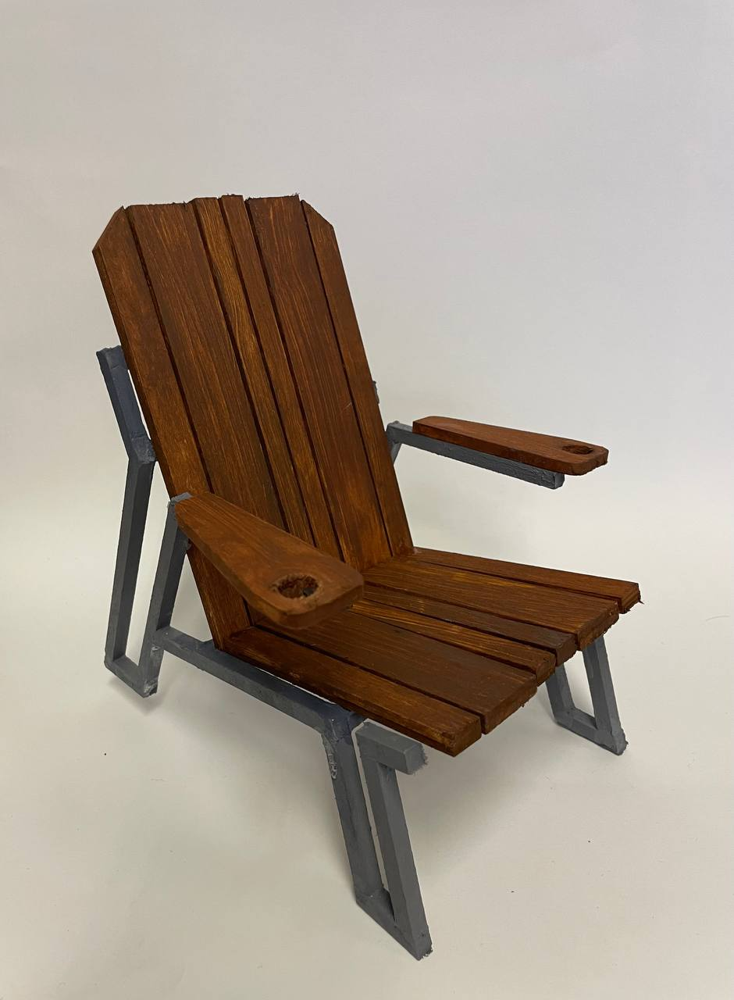
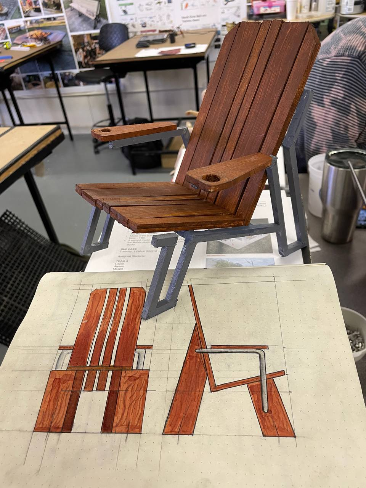
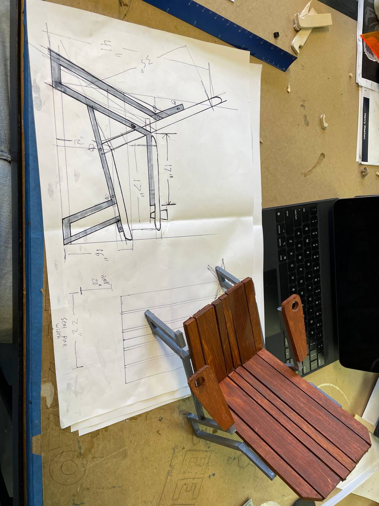
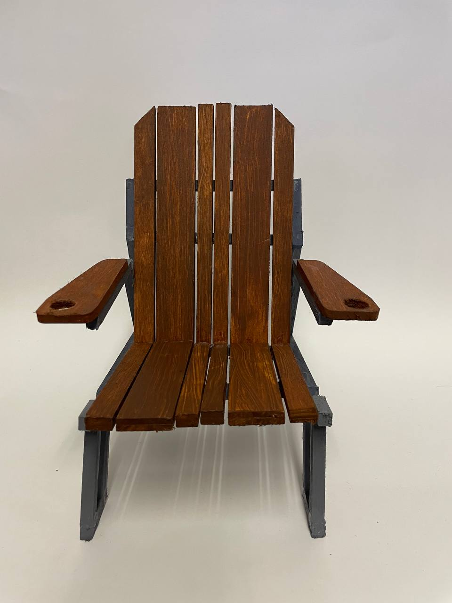
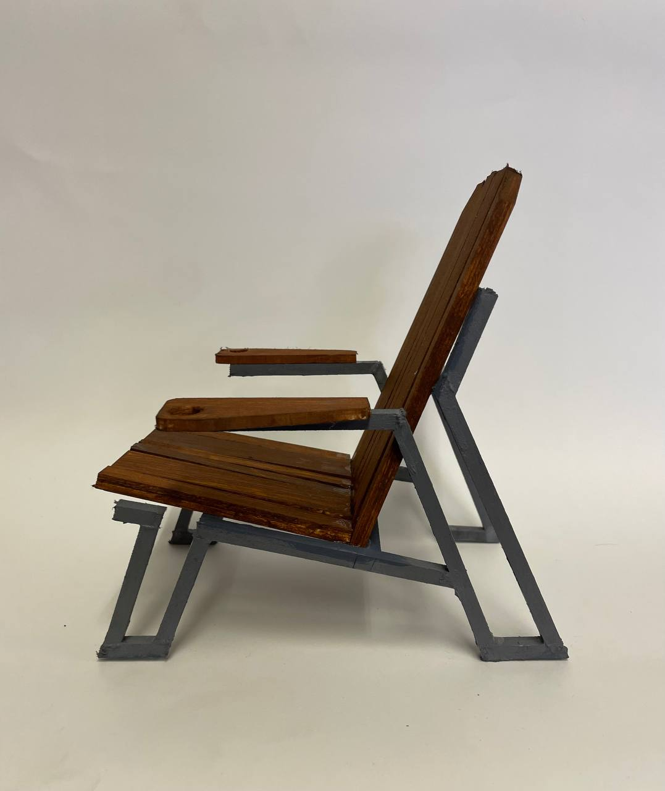
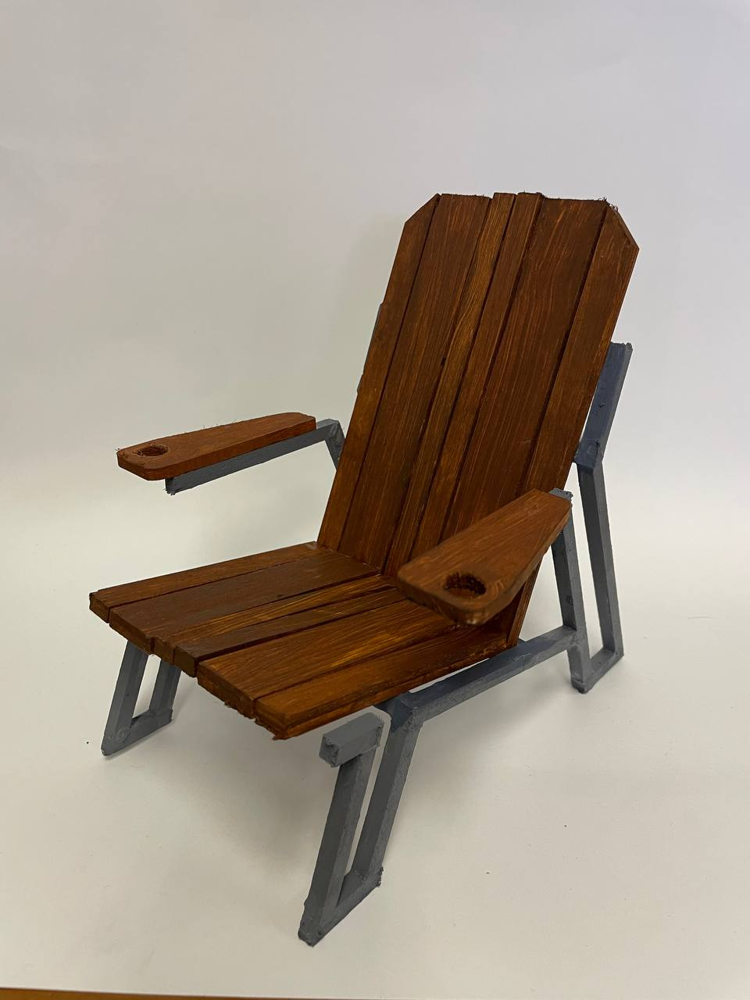
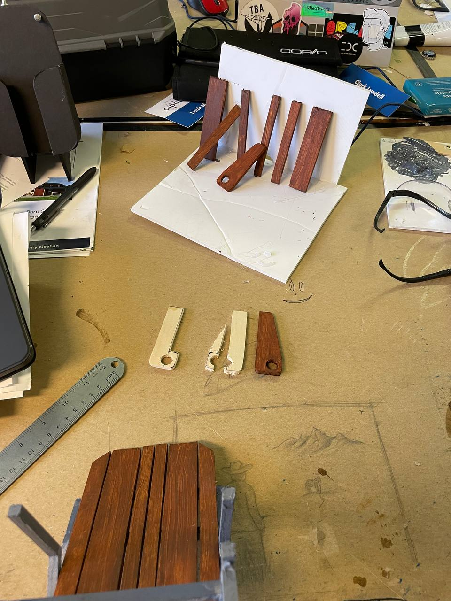
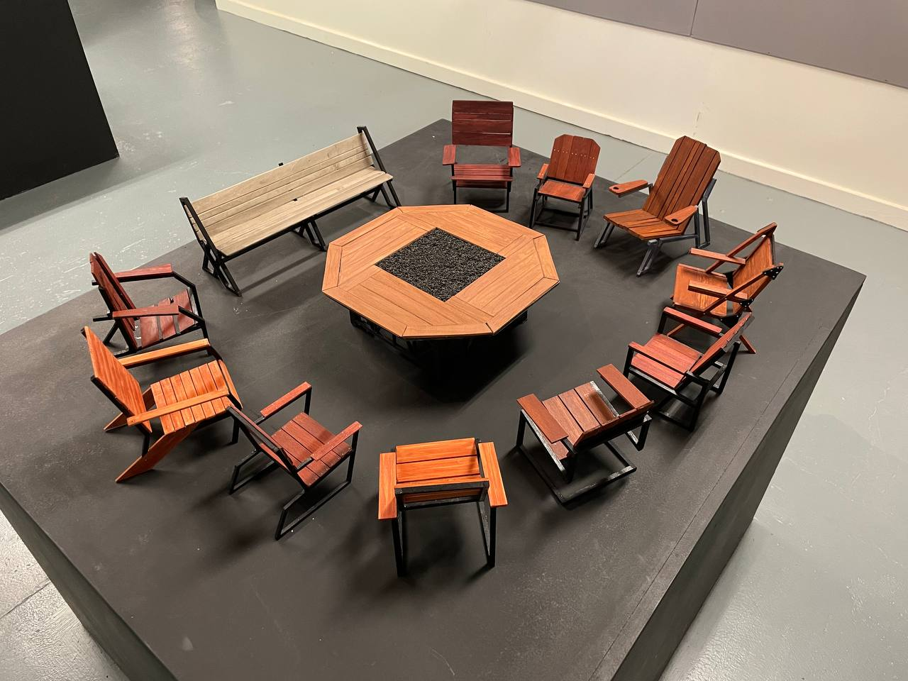

Adirondack, reconsidered. A full outdoor furniture collection designed for Sweetwater Sound — chair, fire pit table, bench, side table. Built to sit lower in the body and higher off the ground.

Traditional Adirondack chairs are deep, low, and tilted back about 15 degrees. Great for 20 minutes. After that your head keeps falling back onto the headrest, which means talking to anyone next to you is a neck workout. And if you're older or have limited mobility, getting out of one is a whole thing.
The Sweetwater Chair pushes against both problems. The seat height is raised so your feet can get back under you when you stand. The whole chair tilts slightly forward to take the load off your neck and open up your posture for conversation. The A-frame leg structure handles the load distribution that makes the forward tilt work without the chair folding under you.
The chair was part of a larger brief — a complete outdoor entertainment set designed around a central fire pit. The collection includes the chair, an octagonal fire pit table with a lava rock fire insert, a long park bench on the same steel-and-wood language, and a side table. The scale models were built in Auburn's ID studio and presented at final critique as a full room scenario.
Materials on the model: mahogany-stained wood slats, gray painted steel A-frame frame, cup holder routed into each armrest. The stain was iterated across three shades before landing on the final mahogany depth.






